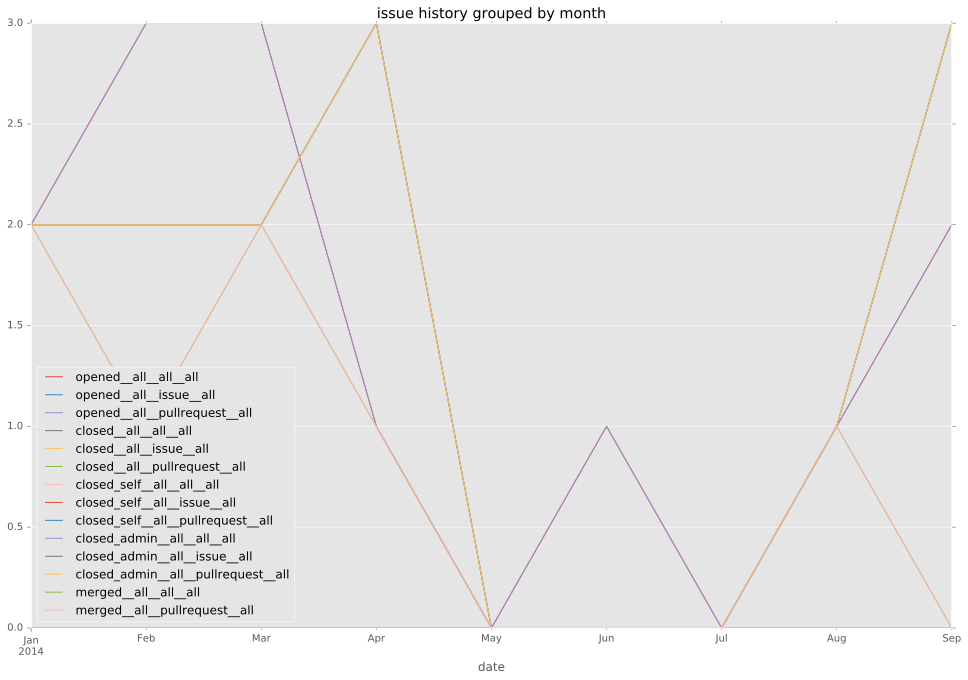
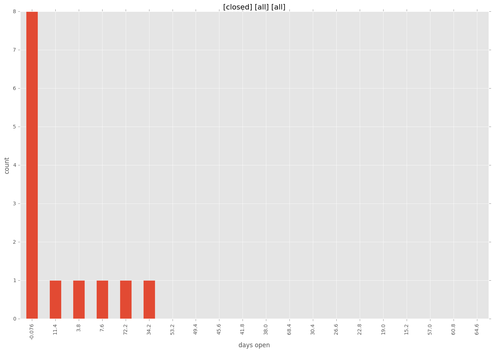
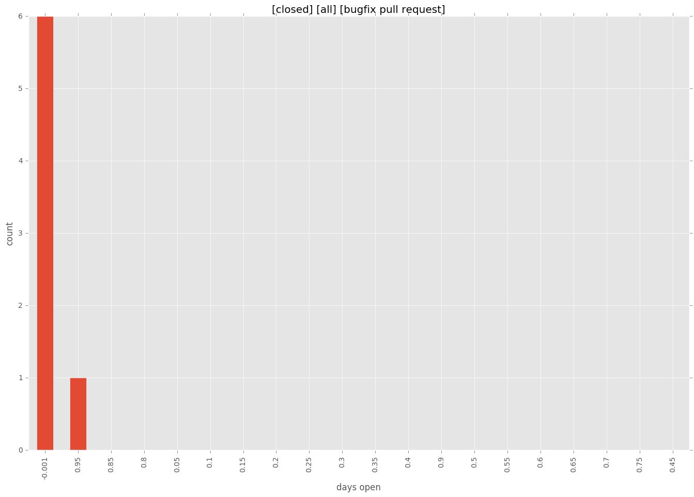
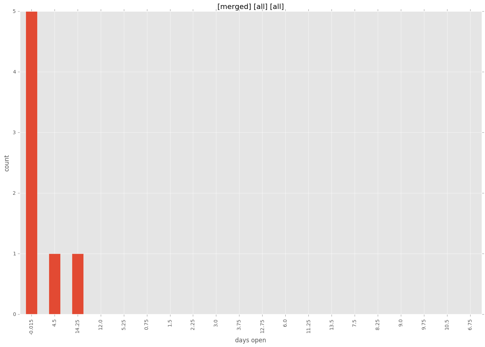
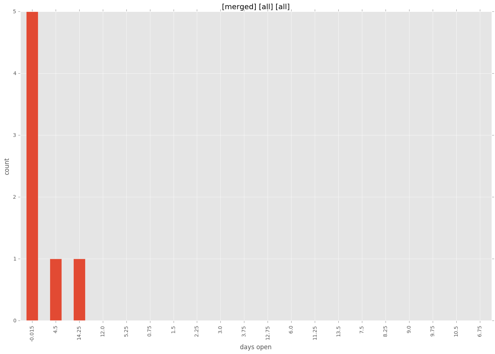

total issue counts
bugfix pull request: 7
feature pull request: 5
pullrequest: 13
docs pull request: 1
issue history

days open by issue type
bugfix pull request
count: 11
std: 0.301511344578
min: 0
max: 1
median: 0.0
mean: 0.0909090909091
feature pull request
count: 8
std: 25.1225567398
min: 0
max: 76
median: 6.5
mean: 15.5
all
count: 20
std: 18.3501039722
min: 0
max: 76
median: 0.0
mean: 8.1
pullrequest
count: 0
std: nan
min: nan
max: nan
median: nan
mean: nan
docs pull request
count: 1
std: nan
min: 37
max: 37
median: 37.0
mean: 37.0
closures grouped by total days open




 
